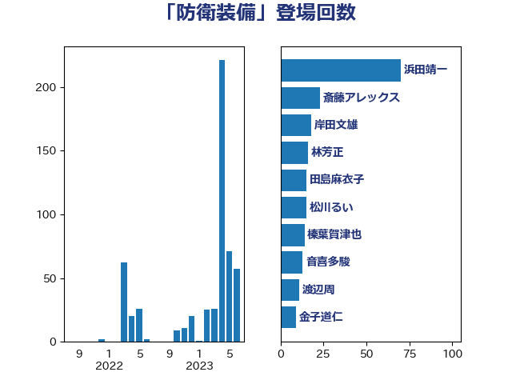

単語「防衛装備」

| 浜田靖一 | 自由民主党 | 70 回 |
| 斎藤アレックス | 国民民主党 | 23 回 |
| 岸田文雄 | 自由民主党 | 18 回 |
| 林芳正 | 自由民主党 | 16 回 |
| 田島麻衣子 | 立憲民主党 | 15 回 |
| 松川るい | 自由民主党 | 15 回 |
| 榛葉賀津也 | 国民民主党 | 14 回 |
| 音喜多駿 | 日本維新の会 | 13 回 |
| 渡辺周 | 立憲民主党 | 11 回 |
| 金子道仁 | 日本維新の会 | 9 回 |
| 小西洋之 | 立憲民主党 | 8 回 |
| 堀井巌 | 自由民主党 | 8 回 |
| 鈴木俊一 | 自由民主党 | 7 回 |
| 羽田次郎 | 立憲民主党 | 7 回 |
| 熊田裕通 | 自由民主党 | 7 回 |
| 赤嶺政賢 | 日本共産党 | 6 回 |
| 山添拓 | 日本共産党 | 6 回 |
| 伊藤俊輔 | 立憲民主党 | 6 回 |
| 田村智子 | 日本共産党 | 5 回 |
| 松野博一 | 自由民主党 | 5 回 |
| 岩本剛人 | 自由民主党 | 5 回 |
| 佐藤啓 | 自由民主党 | 5 回 |
| 鬼木誠 | 立憲民主党 | 4 回 |
| 鈴木敦 | 国民民主党 | 4 回 |
| 美延映夫 | 日本維新の会 | 4 回 |
| 猪瀬直樹 | 日本維新の会 | 4 回 |
| 新垣邦男 | 立憲民主党 | 4 回 |
| 岩谷良平 | 日本維新の会 | 4 回 |
| 佐藤正久 | 自由民主党 | 4 回 |
| 青山繁晴 | 自由民主党 | 3 回 |
| 重徳和彦 | 立憲民主党 | 3 回 |
| 道下大樹 | 立憲民主党 | 3 回 |
| 福山哲郎 | 立憲民主党 | 3 回 |
| 掘井健智 | 日本維新の会 | 3 回 |
| 平木大作 | 公明党 | 3 回 |
| 高木啓 | 自由民主党 | 2 回 |
| 野田佳彦 | 立憲民主党 | 2 回 |
| 石井章 | 日本維新の会 | 2 回 |
| 河西宏一 | 公明党 | 2 回 |
| 水野素子 | 立憲民主党 | 2 回 |
| 武井俊輔 | 自由民主党 | 2 回 |
| 市村浩一郎 | 日本維新の会 | 2 回 |
| 山田賢司 | 自由民主党 | 2 回 |
| 大塚耕平 | 国民民主党 | 2 回 |
| 中谷真一 | 自由民主党 | 2 回 |
| 青柳仁士 | 日本維新の会 | 1 回 |
| 萩生田光一 | 自由民主党 | 1 回 |
| 紙智子 | 日本共産党 | 1 回 |
| 篠原豪 | 立憲民主党 | 1 回 |
| 秋野公造 | 公明党 | 1 回 |
| 神谷宗幣 | 参政党 | 1 回 |
| 石川博崇 | 公明党 | 1 回 |
| 田村貴昭 | 日本共産党 | 1 回 |
| 牧義夫 | 立憲民主党 | 1 回 |
| 牧原秀樹 | 自由民主党 | 1 回 |
| 浜田聡 | NHK党 | 1 回 |
| 浜口誠 | 国民民主党 | 1 回 |
| 津島淳 | 自由民主党 | 1 回 |
| 櫻井周 | 立憲民主党 | 1 回 |
| 柴愼一 | 立憲民主党 | 1 回 |
| 木村次郎 | 自由民主党 | 1 回 |
| 有村治子 | 自由民主党 | 1 回 |
| 徳永久志 | 無所属 | 1 回 |
| 岩渕友 | 日本共産党 | 1 回 |
| 小野寺五典 | 自由民主党 | 1 回 |
| 小熊慎司 | 立憲民主党 | 1 回 |
| 小池晃 | 日本共産党 | 1 回 |
| 宮澤博行 | 自由民主党 | 1 回 |
| 塩村あやか | 立憲民主党 | 1 回 |
| 前原誠司 | 国民民主党 | 1 回 |
| 伊波洋一 | 無所属 | 1 回 |
| 井野俊郎 | 自由民主党 | 1 回 |
| 井上哲士 | 日本共産党 | 1 回 |
| 丸川珠代 | 自由民主党 | 1 回 |
| 三木圭恵 | 日本維新の会 | 1 回 |